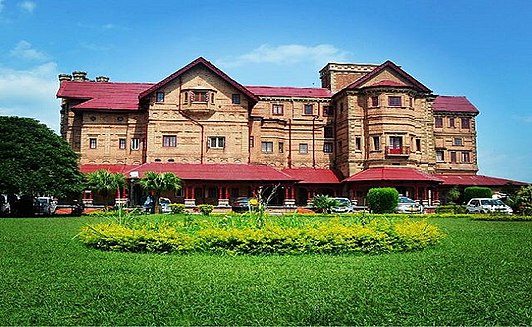
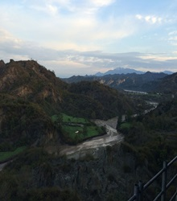
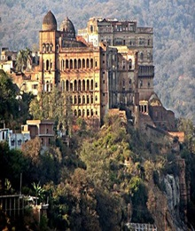
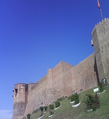
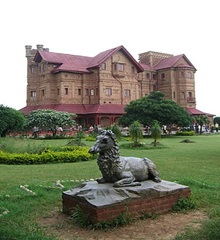
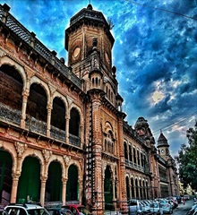
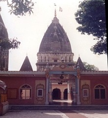
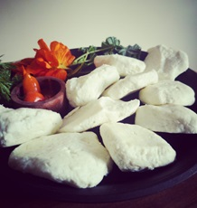

Jammu and Kashmir
This article is about Jammu and Kashmir.
Jammu , is a city in Indian-administered Jammu and Kashmir in the disputed Kashmir region.[3] It is the winter capital of Jammu and Kashmir, which is an Indian-administered union territory. It is the headquarters and the largest city in Jammu district. Lying on the banks of the river Tawi, the city of Jammu, with an area of 240 km2 (93 sq mi),[5] is surrounded by the Himalayas in the north and the northern plains in the south. Jammu is the second-most populous city of the union territory. Jammu is known as "City of Temples" for its ancient temples and Hindu shrines.
Etymology
According to local tradition, Jammu is named after its founder, Raja Jambulochan, who is believed to have ruled the area in the 9th century.[13] Local tradition holds the city to be 3000 years old but this is not supported by historians.
Geography
Jammu is located at 32.73°N 74.87°E.[15] It has an average elevation of 300 m (980 ft). Jammu city lies at uneven ridges of low heights at the Shivalik hills. It is surrounded by the Shivalik range to the north, east, and southeast while the Trikuta Range surrounds it in the northwest. It is approximately 600 kilometres (370 mi) from the national capital, New Delhi. The city spreads around the Tawi river with the old city overlooking it from the north (right bank) while the new neighbourhoods spread around the southern side (left bank) of the river. There are five bridges on the river. The city is built on a series of ridges.
 -
1History
- 1.1Modern history
- 1.2Battles
- 2Climate
- 3Transport
- 4Administration
- 5Economy
- 6Tourism
- 7Demographics
- 8Education
- 9Cuisine
- 10Refugees
History
According to Tarikh-i-Azmi, Jammu came into existence around 900 CE. The state of Durgara (modern forms "Duggar" and "Dogra)") is also attested from around this time.[16][17] The capital of the Durgara state at that time is believed to have been Vallapura (identified with modern Billawar). Its rulers are repeatedly mentioned in Kalhana's Rajatarangini.[18] Babbapura (modern Babor) is another state mentioned in Rajatarangini, some of whose rulers also appear by in the Vamshavali (family chronicles) of later Jammu rulers. These rulers are believed to have enjoyed almost independent status and allied themselves with the Sultans of Delhi. Jammu is mentioned by name in the chronicles of Timur (r. 1370–1406), who invaded Delhi in 1398 and returned to Samarkand via Jammu. Raja Bhim Dev is prominently mentioned in the Delhi chronicles as a supporter of Mubarah Shah (r. 1421–1434) against Jasrat.[19] Between 1423 and 1442, Jammu came under control of Jasrat (r. 1405–1442) who conquered it after killing his arch-enemy Bhim Dev in 1423. Later, Jasrat appointed Manik Dev (also known as Ajeo Dev) as vassal, and married his daughter.[20] In the Mughal chronicles of Babur in the early 16th century, Jammu is mentioned as a powerful state in the Punjab hills. It is said to have been ruled by Manhas Rajputs. Emperor Akbar brought the hill kingdoms of the region under Mughal suzerainty, but the kings enjoyed considerable political autonomy. In addition to Jammu, other kingdoms of the region such as Kishtwar and Rajauri were also prominently mentioned. It is evident that the Mughal empire treated these hill chiefs as allies and partners in the empire.

Modern history
After the decline of the Mughal power in the 18th century, the Jammu state under Raja Dhruv Dev of the Jamuwal (Jamwal) family asserted its supremacy among the Dugar states. Its ascent reached its peak under his successor, Raja Ranjit Dev (r. 1728–1780), who was widely respected among the hill states.[22][23] Ranjit Dev promoted religious freedom and security, which attracted many craftsmen and traders to settle in Jammu, contributing to its economic prosperity.[24] Towards the end of Ranjit Dev's rule, the Sikh clans of Punjab (misls) gained ascendency, and Jammu began to be contested by the Bhangi, Kanhaiya and Sukerchakia misls. Around 1770, the Bhangi misl attacked Jammu and forced Ranjit Dev to become a tributary. Brij Lal Dev, Ranjit Dev's successor, was defeated by the Sukerchakia chief Mahan Singh, who sacked Jammu and plundered it. Thus Jammu lost its supremacy over the surrounding country. In the Battle of Rumal, Jammu ruler was killed by Sikhs.[25] [26] In 1808, Jammu itself was annexed to the Sikh Empire by Ranjit Singh, the son of Mahan Singh.[27] In 1818 Raja Kishore Singh, father of Raja Gulab Singh, was appointed and anointed the ruler of Jammu principality, and hence started the Jamwal dynasty, aka Dogra dynasty, which came to rule the princely state of Jammu and Kashmir under British suzerainty. The rulers built large temples, renovated old shrines, built educational institutes and many more. A 43 km long railway line connecting Jammu with Sialkot was laid in 1897[28] Jammu has historically been the capital of Jammu Province and the winter capital of the princely state of Jammu and Kashmir (1846–1952). After the partition of India, Jammu continues as the winter capital of the Indian state of Jammu and Kashmir.
Battles
Battle of Jammu (1712) Battle of Rumal[29] Battle of Jammu (1808)[30]
Climate
Jammu, like the rest of north-western India, features a humid subtropical climate (Köppen Cwa), with extreme summer highs reaching 46 °C (115 °F), and temperatures in the winter months occasionally falling below 4 °C (39 °F). June is the hottest month with average highs of 40.6 °C (105.1 °F), while January is the coldest month with average lows reaching 7 °C (45 °F). Average yearly precipitation is about 1,400 mm (55 in) with the bulk of the rainfall in the months from June to September, although the winters can also be rather wet. In winter dense smog causes much inconvenience and temperature even drops to 2 °C (36 °F). In summer, particularly in May and June, extremely intense sunlight or hot winds can raise the temperature to 46 °C (115 °F). Following the hot season, the monsoon lashes the city with heavy downpours along with thunderstorms; rainfall may total up to 669 mm (26.3 in) in the wettest months. The city is exposed to heatwaves.[clarification needed]
Highest recorded temperature: 47.4 °C (117.3 °F) on 31 May 1988.[31] Lowest recorded temperature: 0.5 °C (32.9 °F) on 24 January 2016.[31] Climate data for Jammu (1991–2020, extremes 1925–2020)
Transport
Jammu city has a railway station called Jammu Tawi (station code JAT) that is connected with major cities of India. The old railway link to Sialkot was suspended by Pakistan in September 1947, and Jammu had no rail services until 1971, when the Indian Railways laid the Pathankot-Jammu Tawi Broad Gauge line. The new Jammu Tawi station opened in October 1972 and is an origination point for express trains. With the commencement of the Jammu–Baramulla line, all trains to the Kashmir Valley will pass through Jammu Tawi. A part of the Jammu–Baramulla project has been executed and the track has been extended to Katra. Jalandhar - Pathankot-Jammu Tawi section has been doubled and electrified. National Highway 44 which passes through Jammu connects it to the Kashmir valley. National Highway 1B connects Jammu with Poonch town. Jammu is 80 kilometres (50 mi) from Kathua town, while it is 68 kilometres (42 mi) from Udhampur city. The famous pilgrimage town of Katra is 49 kilometres (30 mi) from Jammu. Jammu Airport is in the middle of Jammu. It has direct flights to Srinagar, Delhi, Amritsar, Chandigarh, Leh, Mumbai and Bengaluru. Jammu Airport operates daily 30 arrival and departure of flights which are served by Go First, Air India, SpiceJet, IndiGo and Vistara. The city has JKSRTC city buses and minibusses for local transport which run on some defined routes. These minibusses are called "Matadors". Besides this auto-rickshaw and cycle-rickshaw service is also available. Local taxis are also available.

Administration
Jammu city serves as the winter capital of Jammu and Kashmir state from November to April when all the offices move from Srinagar to Jammu. Srinagar serves as the summer capital from May to October.[32] Jammu was a municipal committee during 2001 census of India. With effect from 5 September 2003, it has upgraded status of a municipal corporation.
Economy
Jammu city is the main cultural and economic centre of the administrative division of Jammu. A famous local basmati rice is produced in the RS Pura area near Jammu, and processed in rice mills in Jammu. The industrial estate at Bari Brahamna has a large presence of industrial units manufacturing a variety of products including carpets and electronic goods.
Tourism
Tourism is the largest industry in Jammu city. It is also a focal point for the pilgrims going to Vaishno Devi and Kashmir valley as it is second last railway terminal in North India. All the routes leading to Kashmir, Poonch, Doda and Laddakh start from Jammu city. So throughout the year, the city remains full of people from all the parts of India. Places of interest include old historic palaces like Mubarak Mandi Palace, Purani Mandi, Rani Park, Amar Mahal, Bahu Fort, Raghunath Temple, Ranbireshwar Temple, Karbala, Peer Meetha, Old city.
   Demographics
As of 2011 census,[36] the population of Jammu city was 502,197. Males constituted 52.7% of the population; females numbered constituted 47.3% of the population. The sex ratio was 898 females per 1,000 males against the national average of 940. Jammu had an average literacy rate of 89.66%, much higher than the national average of 74.4%: male literacy was 93.13% and female literacy was 85.82%. 8.47% of the population were under 6 years of age. The urban agglomeration of Jammu had a population of 657,314.[37] Most of Jammu and Kashmir's Hindus live in the Jammu region; many speak Dogri.
| Rank | Language | 1961 [11] |
|---|---|---|
| 1 | Dogri | 55% |
| 2 | Punjabi | 22% |
| 3 | Hindi | 11.6% |
| — | Other | 11.4% |
Education
In the 2014–2015 General Budget of India, Arun Jaitley, the Finance Minister of India, proposed an Indian Institute of Technology and an Indian Institute of Management for the division. List of some educational institutions is provided.

Engineering Colleges in Jammu:-
Indian Institute of Technology Jammu
Medical Institutions:-
Legal Institutions:-
General Degree Courses (colleges):-
Universities:-
Schools
Cuisine
Jammu is known for its sund panjeeri, patisa, rajma with rice and Kalari cheese. Dogri food specialties include ambal, khatta meat, kulthein di dal, dal patt, maa da madra, rajma, and auriya. Pickles typical of Jammu are made of kasrod, girgle, mango with saunf, jimikand, tyaoo, seyoo, and potatoes. Auriya is a dish made with potatoes. Jammu cuisine features various chaats, especially gol gappas, kachalu, Chole bhature, gulgule, rajma kulche and dahi palla, among various others.
Refugees
Kashmiri Pandit refugees
Exodus of Kashmiri Hindus Being comparatively safe from terrorism, Jammu city has become a hub of refugees. These primarily include Kashmiri Hindus who migrated from Kashmir Valley in 1989. Hindus from Pakistan-administered Jammu and Kashmir who migrated to India have also settled in Jammu city. According to records, approximately 31,619 Hindu families had migrated from Pakistan administered Jammu and Kashmir to India. Of these 26,319 families are settled in jammu
Rohingya refugees
Rohingya refugee crisis Rohingyas who fled Myanmar during 2016 have also currently settled in Jammu.[49][50] Some believes the settlements of Rohingya Muslims have also raised security threats in Jammu.[51][52][53] During the 2018 Sunjuwan attack, intelligence agencies suspected but did not prove involvement of Rohingya Muslims in the attack.
Main article: 2015 Rohingya refugee crisis Rohingyas who fled Myanmar during 2016 have also currently settled in Jammu.[49][50] Some believes the settlements of Rohingya Muslims have also raised security threats in Jammu.[51][52][53] During the 2018 Sunjuwan attack, intelligence agencies suspected but did not prove involvement of Rohingya Muslims in the attack.